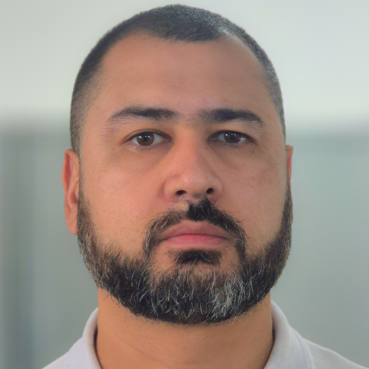

Nível 3 · SysAdmin · Projetos & Continuidade
Mais de 15 anos de profissionalismo, da manutenção à virtualização e recuperação de desastres.

Especialista em infraestrutura com mais de 15 anos de experiência prática. Atuo como ponto focal para demandas complexas (Nível 3), projetando, implantando e otimizando servidores Windows/Linux, virtualização VMware e redes MikroTik.
Contexto:
Escritório contábil com servidor rodando Máquina Virtual e backups manuais via SCP, vulnerável a falhas humanas e sem plano de recuperação.
Atuação como consultor especialista — da arquitetura à entrega:
Tecnólogo em Segurança da Informação com foco em proteção de dados, segurança de redes, ethical hacking e gestão de riscos.
CursandoFormação técnica com foco em infraestrutura de TI, redes de computadores e suporte técnico.